Global Knowledge Communication
and How to Make it Efficient and Reliable
Tenure Interview of Tobias Kuhn
VU Amsterdam, 8 March 2019
Global Knowledge Communication Crisis
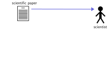Global Knowledge Communication Crisis
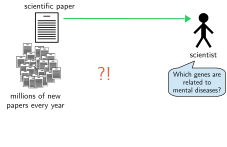Global Knowledge Communication Crisis
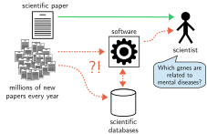My Research on Global Knowledge Communication
Communication Methods:
Nanopublications and FAIR
Expressive Controlled Natural Languages
Communication Content:
Controversy and Bias
Knowledge Networks
Background: Nanopublications

Nanopublication: Simplified Example
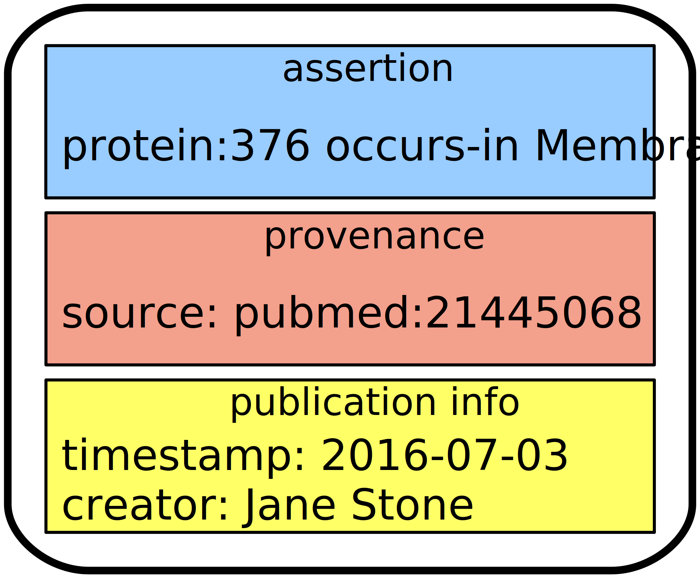Nanopublication: Real Example
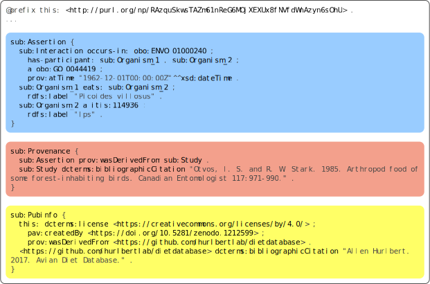http://purl.org/np/RAzquSkwsTAZm61nReG6MOjXEXUx8fNVfdWnAzyn6sOhU
Research Highlights:
Nanopublications and FAIR
Scholarly communication methods for the digital age:
- Reliable Publishing with Nanopublications
- Reproducible and Evolving Datasets
- Uniform Cross-Dataset Interoperability
- Usability for Web Developers and End Users
- Applying it to Peer Reviewing
- Using the FAIR Momentum
- Vision: Genuine Semantic Publishing
Decentralized Server Network with >10M Nanopublications is Fast and Reliable
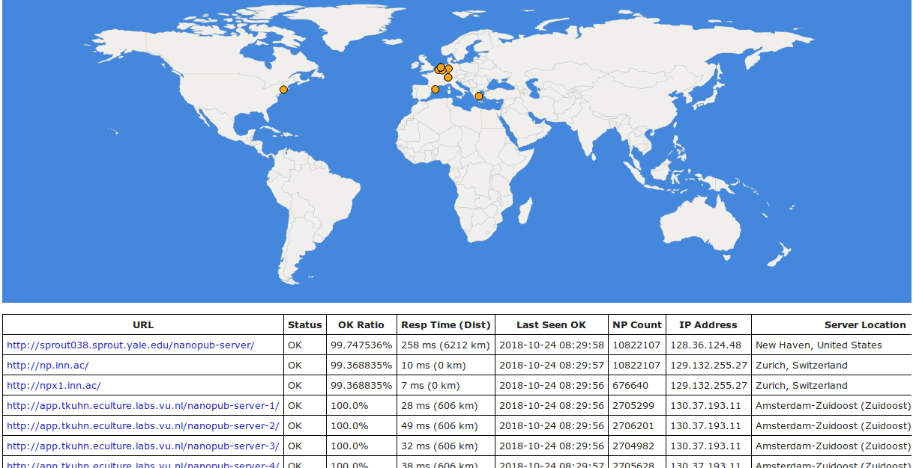 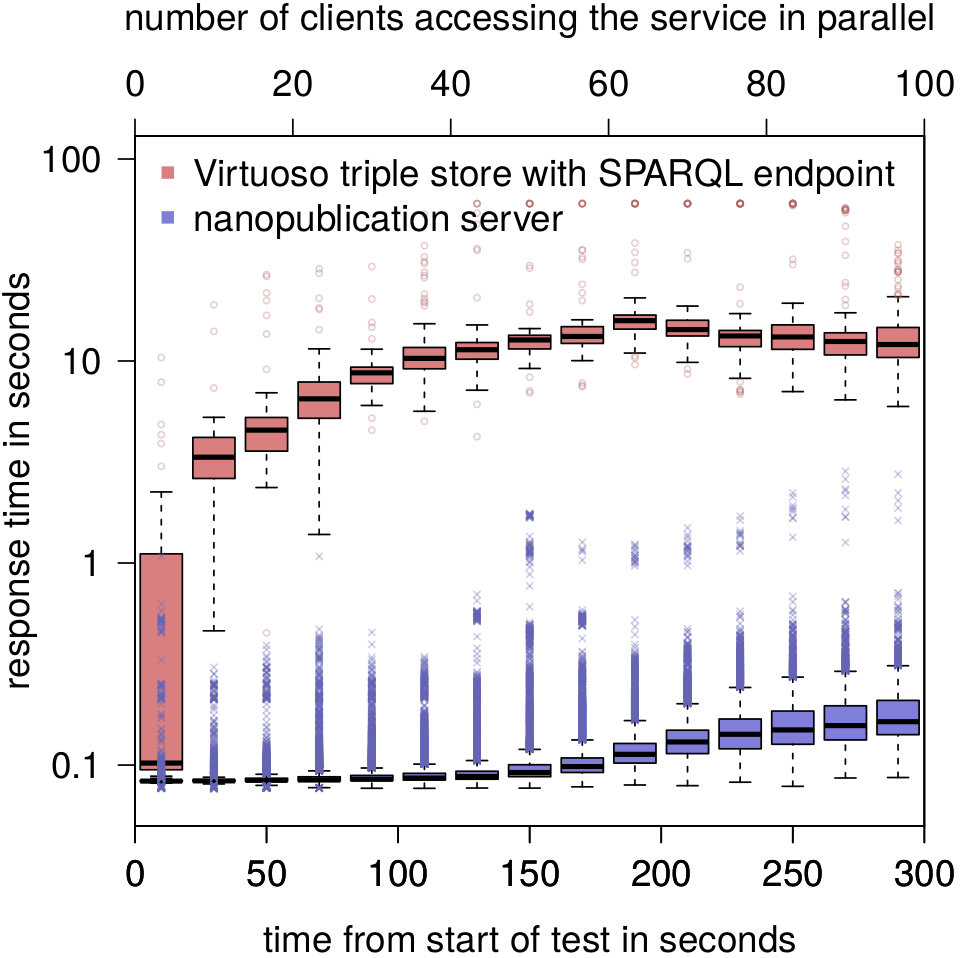Tobias Kuhn, Christine Chichester, Michael Krauthammer, Núria Queralt-Rosinach, Ruben Verborgh, George Giannakopoulos, Axel Ngonga, Raffaele Viglianti, Michel Dumontier. Decentralized provenance-aware publishing with nanopublications. PeerJ Computer Science, 2:e78, 2016.
Nanopublication Overhead Disappears and Turns Into Advantage for Evolving Datasets
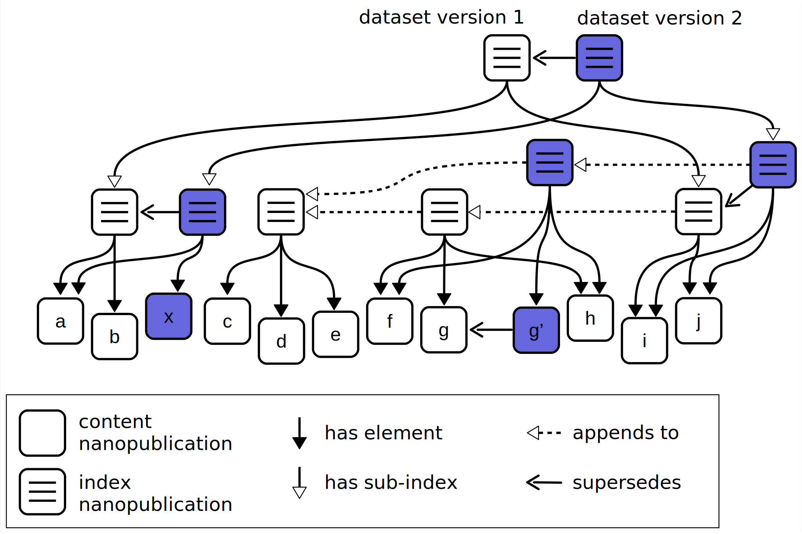 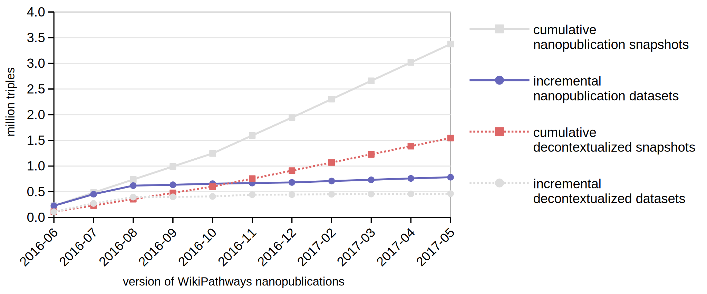Tobias Kuhn, Egon Willighagen, Chris Evelo, Núria Queralt-Rosinach, Emilio Centeno, Laura I. Furlong. Reliable Granular References to Changing Linked Data. In Proceedings of ISWC 2017. Springer, 2017.
Nanopublications Enable Global Data Integrity and Interoperability
Reliable and uniform cross-dataset processing,
for example to analyze vocabulary use or type distribution:
Tobias Kuhn, Albert Meroño, Alexander Malic, Jorrit Poelen, Allen Hurlbert, et al. Nanopublications: A Growing Resource of Provenance-Centric Scientific Linked Data. In Proceedings of IEEE eScience 2018.
Data 2 Documents Makes Linked Data Easy to Use for Web Developers and End Users
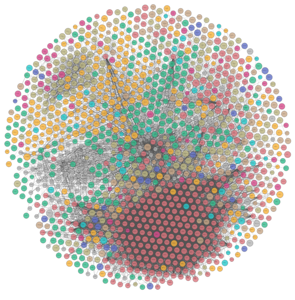 ➟ 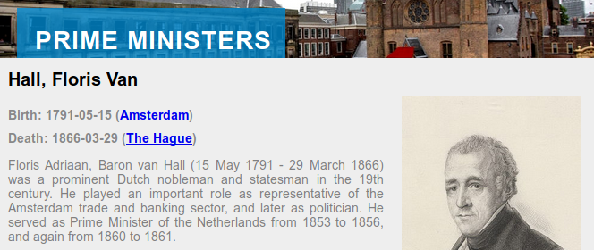Niels Ockeloen, Victor de Boer, Tobias Kuhn, and Guus Schreiber. Data 2 Documents: Modular and Distributive Content Management in RDF. In EKAW 2016. Springer, 2016. Best paper award.
Linked Peer Reviewing Workflows
Based on Nanopublications
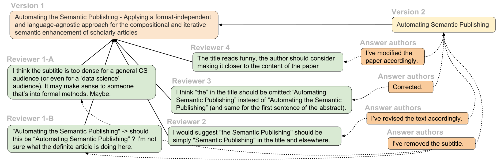
Supported with € 100 000 by industry partners: IOS Press and Sound&Vision
Cristina-Iulia Bucur. Linkflows: Enabling a Web of Linked Semantic Publishing Workflows. In Proceedings of the PhD Symposion of ESWC 2018. Springer, 2018.

- Adoption by major funders and publishers
- Slogan for my work: FAIR, FAIRer, Nanopublications
- Ongoing work: Applying FAIR to entire scientific workflow
Mark Wilkinson, Michel Dumontier, ..., Tobias Kuhn, ..., Barend Mons. The FAIR Guiding Principles for scientific data management and stewardship. Scientific Data, 3:16001, 2016. 1094 citations.
Vision for Future Work:
Genuine Semantic Publishing
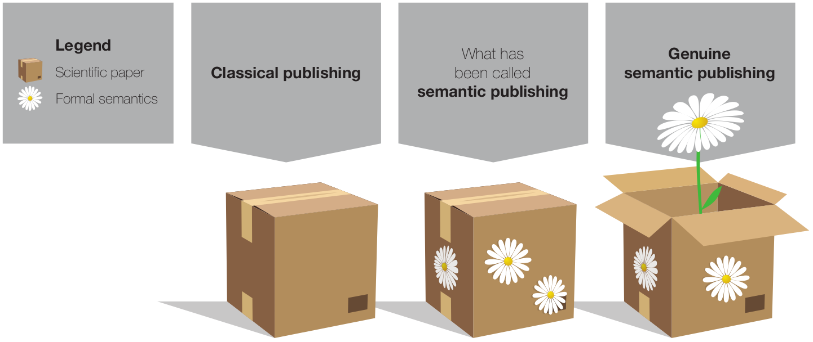
Tobias Kuhn and Michel Dumontier. Genuine semantic publishing. Data Science, 1(1-2), 2017.
Research Highlights:
Expressive Controlled Natural Languages
Intuitive languages to communicate complex issues:
- AIDA
- Thing Explainer
AIDA Sentences: Atomic, Independent, Declarative, Absolute
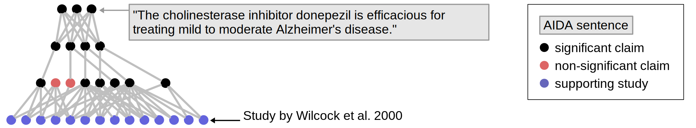Students found AIDA sentences for papers helpful:
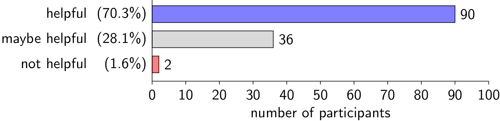Tobias Kuhn. Using the AIDA Language to Formally Organize Scientific Claims. In Proceedings of CNL 2018. IOS Press, 2018. Best paper candidate.
Thing Explainer: Use Only 1000 Most Used English Words
Not quite as simple as advocated:
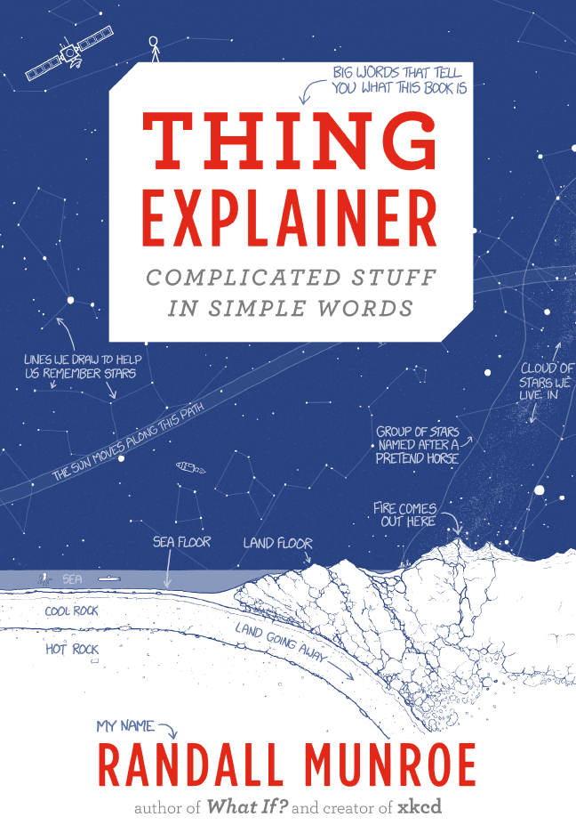 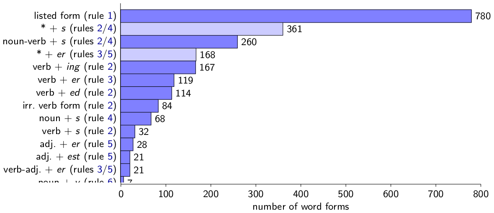Tobias Kuhn. The Controlled Natural Language of Randall Munroe's Thing Explainer. In Proceedings CNL 2016. Springer, 2016.
Research Highlights:
Controversy and Bias
Analyzing the forces that can disrupt communication:
- CAPOTE Controversy Model
- Bias in International Video News
CAPOTE Controversy Model
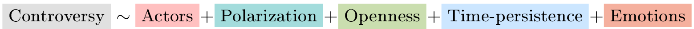Validated by crowdsourced regression analysis:
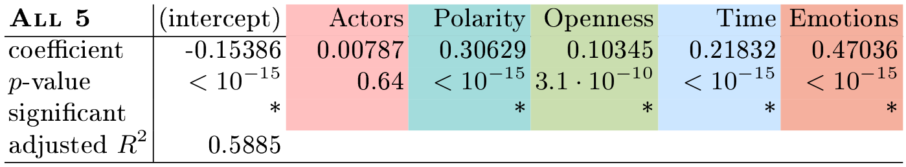Benjamin Timmermans, Tobias Kuhn, Kaspar Beelen, Lora Aroyo. Computational Controversy. In Proceedings of Socinfo2017. Springer, 2017.
Bias in International Video News
Preliminary results:
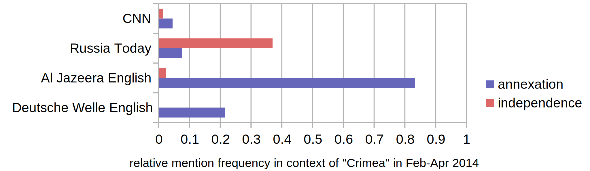With Alessandro Bozzon, Antoaneta Dimitrova, Alec Badenoch, Johan Oomen, Jesse de Vos, Honorata Mazepus, Markus de Jong, Panagiotis Mavridis, and Lora Aroyo. https://capturebias.wordpress.com
Research Highlights:
Knowledge Networks
Analyzing the structure of our knowledge:
- Social Networks from Novels
- Linked Open Data Networks
Knowledge Networks: High Diversity but Poor Completeness
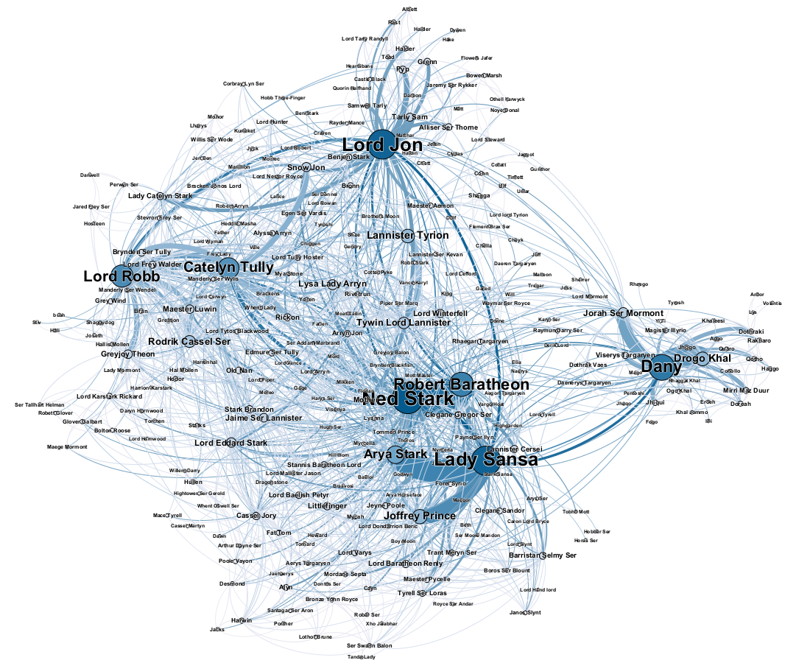 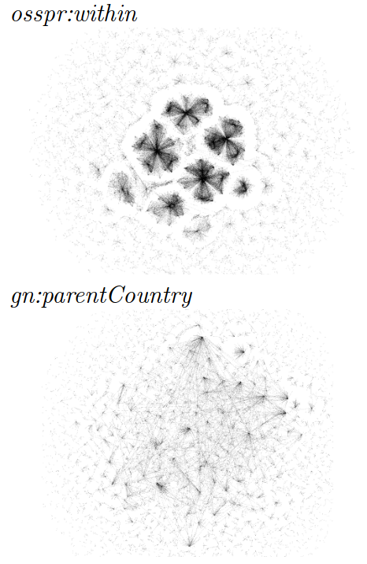Dekker et al. Evaluating social network extraction .... PeerJ, to appear. Noteworthy article invited for press release by publisher. / Mangaladevi et al. Understanding Knowledge Networks. In LD4IE 2017.
Research Summary 2015–now
- 1816 citations
- 18 peer-reviewed articles (8 as first author)
- 5 journal articles
- 5 papers at conferences with acceptance rates <35%
- Leading the collaborations with co-authors from 14 institutions in 7 countries
- best paper award at conference
- "noteworthy article" at journal
Personal Research Grant Proposals (unsuccessful)
NWO (A+/A/B/UF/U scale):
- Vidi 2016: A+, A+, A
- Top Grant (module 2) 2017: A, A
- Vidi 2017: A+, A, A
- Top Grant (module 2) 2018: A+, A, UF
ERC Starting Grant 2016: Very Good (5), Excellent (6), Outstanding (1)
More Research Grants
Successful:
- NWO JEDS: FAIR Workflows (co-PI), with Maastricht and eScience Center, € 437 000
- VU Innovatie AIO: Linkflows (main PI), with IOS Press and Sound&Vision, € 200 000
Unsuccessful (H2020):
- EINFRA-9-2015: PharmaVRE. Score: 13.0/15.0
- EINFRA-22-2016: NANO. Score: 12.5/15.0
- ICT29-2018: DACORA. Score: 12.5/15.0 (on reserve list)
Education Highlights
- Master course Knowledge and Media
- Bachelor course Information Retrieval
- Master/Bachelor project supervisor of 30 students
Master course Knowledge and Media
- Complete Redesign of Content and Structure
- Assessment: Flash Presentations, Posters, Overview and Focus Papers
- Good student evaluations
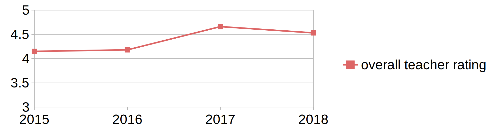
Course Improvement: Student Feedback
I ask students every year about their opinion of the papers on the reading list:
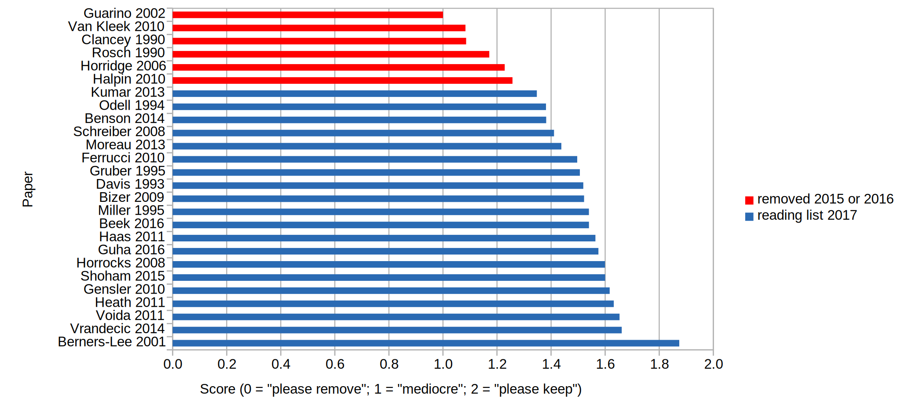Bachelor Course Information Retrieval
- Based on Classic Textbook by Manning et al.
- Assessment: Six IPython Notebook Based Assignments and Multiple-Choice Exam
- Good student evaluations
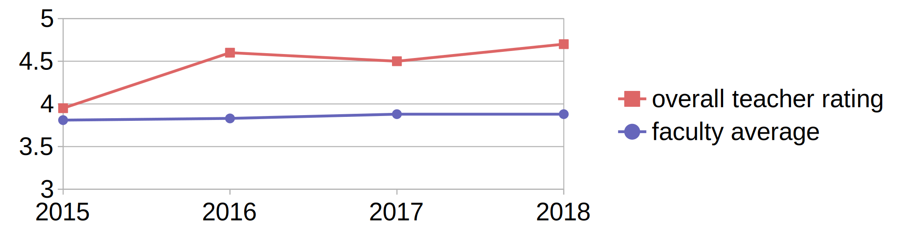
Video Recordings: Never Again Without
I started to record all my lectures for both courses.
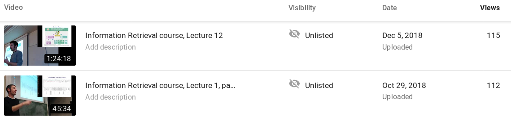"Were the video recordings helpful?":
- Knowledge and Media: 4.68 / 5.00
- Information Retrieval: 4.95 / 5.00
Master/Bachelor project supervision
- 30 Master/Bachelor students supervised
- All completed successfully
- No major delays (all finished in August the latest)
Management Highlights:
Projects and Group
- Main PI of Capturing Bias Project (NWO VWdata)
- Co-PI of FAIR Workflows Project (NWO JEDS)
- Supervisor of 3 Postdocs and 4 PhD Students
- Independently managed the UCDS group during the transition period in 2018, together with Victor de Boer
Management Highlights:
Department and External
- Master IS Project Coordinator
- Exam Committee Member
- Education Committee Member of BSc/MSc AI
- Editor-in-Chief of Journal Data Science at IOS Press